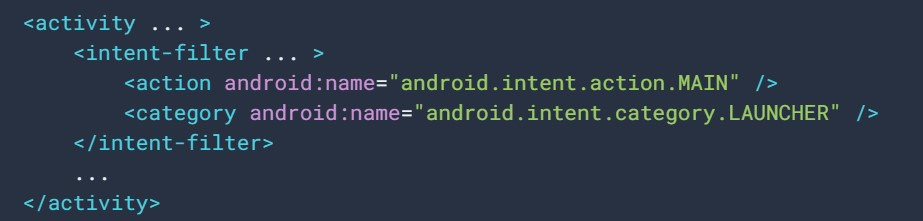

Activity:
Contenido:
Introducción a las actividades
El sistema Android inicia el código en una instancia de Activity invocando métodos de devolución de llamada específicos que corresponden a etapas específicas de su ciclo de vida.
El concepto de actividades
Una actividad proporciona la ventana en la que la app dibuja su IU. Por lo general, esta ventana llena la pantalla, pero puede ser más pequeña y flotar sobre otras ventanas.
La mayoría de las apps contienen varias pantallas, lo cual significa que incluyen varias actividades.
Por lo general, una actividad en una app se especifica como la actividad principal, que es la primera pantalla que aparece cuando el usuario inicia la app. Luego, cada actividad puede iniciar otra actividad a fin de realizar diferentes acciones.
Si quieres usar actividades en tu app, debes registrar información sobre estas en el manifiesto de la app y administrar los ciclos de vida de las actividades de manera apropiada.
Cómo configurar el manifiesto
Para que tu app pueda usar actividades, debes declararlas, y también declarar algunos de sus atributos, en el manifiesto.
Cómo declarar actividades
El único atributo obligatorio para este elemento es android:name, que especifica el nombre de la clase de la actividad.
Cómo declarar filtros de intents
Estos proporcionan la capacidad de iniciar una actividad no solo en función de una solicitud explícita, sino también de una implícita
Para aprovechar esta función, declara un atributo <intent-filter> en el elemento <activity>. La definición de este elemento incluye un elemento <action> y, de manera opcional, un elemento <category> o <data>.
Estos elementos se combinan para especificar el tipo de intent al que puede responder la actividad.
Cómo declarar permisos
Si declaras un elemento <uses-permission> para una actividad principal, cada actividad secundaria debe tener un elemento <uses-permission>.
Luego, para poder llamar a SocialApp, tu app debe tener el mismo permiso que se estableció en el manifiesto de SocialApp.
Ciclo de vida de una actividad
Cuando un usuario navega por tu app, sale de ella y vuelve a entrar, las instancias de Activity de tu app pasan por diferentes estados de su ciclo de vida. La clase Activity proporciona una serie de devoluciones de llamada que permiten a la actividad saber que cambió un estado, es decir, que el sistema está creando, deteniendo o reanudando una actividad, o finalizando el proceso en el que se encuentra.
Dentro de los métodos de devolución de llamada de ciclo de vida, puedes declarar el comportamiento que tendrá tu actividad cuando el usuario la abandone y la reanude.
Conceptos de los ciclos de vida de las actividades
Para navegar por las transiciones entre las etapas del ciclo de vida de una actividad, la clase Activity proporciona un conjunto básico de seis devoluciones de llamadas: onCreate(), onStart(), onResume(), onPause(), onStop() y onDestroy()
representación visual:
Cómo administrar el ciclo de vida de la actividad
A lo largo de su vida útil, una actividad pasa por varios estados.
· onCreate()
Debes implementar esta devolución de llamada, que se activa cuando el sistema crea la actividad por primera vez. Cuando se crea la actividad, esta entra en el estado Created. En el método onCreate(), ejecutas la lógica de arranque básica de la aplicación que debe ocurrir una sola vez en toda la vida de la actividad.
· onStart()
Cuando la actividad entra en el estado Started, el sistema invoca esta devolución de llamada. La llamada onStart() hace que el usuario pueda ver la actividad mientras la app se prepara para que esta entre en primer plano y se convierta en interactiva.
· onResume()
Cuando la actividad entra en el estado Resumed, pasa al primer plano y, a continuación, el sistema invoca la devolución de llamada onResume(). Este es el estado en el que la app interactúa con el usuario. La app permanece en este estado hasta que ocurre algún evento que la quita de foco.
· onPause()
El sistema llama a este método a modo de primera indicación de que el usuario está abandonando tu actividad (aunque no siempre significa que está finalizando la actividad); esto indica que la actividad ya no está en primer plano (aunque puede seguir siendo visible si el usuario está en el modo multiventana). Utiliza el método onPause() para pausar o ajustar las operaciones que no deben continuar (o que deben continuar con moderación) mientras Activity se encuentra en estado Paused y que esperas reanudar en breve.
· onStop()
Cuando la actividad pase al estado Stopped, cualquier componente que priorice el ciclo de vida vinculado al de la actividad recibirá el evento ON_STOP. Aquí es donde los componentes del ciclo de vida pueden detener cualquier funcionalidad que no necesite ejecutarse mientras el componente no sea visible en la pantalla.
En el método onStop(), la app debe liberar o ajustar los recursos que no son necesarios mientras no sea visible para el usuario.
También debes utilizar onStop() para realizar operaciones de finalización con un uso relativamente intensivo de la CPU.
· onRestart()
El sistema invoca esta devolución de llamada cuando una actividad en estado Detenida está por volver a iniciarse.
· onDestroy()
Cuando la actividad pase al estado Destroyed, cualquier componente que priorice el ciclo de vida vinculado al de la actividad recibirá el evento ON_DESTROY. Aquí es donde los componentes del ciclo de vida pueden recuperar cualquier elemento que se necesite antes de que finalice el objeto Activity.
Estado de actividad y expulsión de memoria
El sistema finaliza los procesos cuando necesita liberar RAM; la probabilidad de que el sistema finalice un proceso determinado dependerá del estado del proceso en ese momento.
Correlación entre el estado del proceso, el estado de la actividad y la probabilidad de que el sistema finalice el proceso.
Probabilidad de que finalice |
Estado del proceso |
Estado de la actividad |
Menos |
Primer plano (en foco o por estar en él) |
Created |
Más |
Segundo plano (foco perdido) |
Pausado |
Mayor |
Segundo plano (no visible) |
Detenido |
Vacío |
Finalizado |
El sistema nunca finaliza una actividad de forma directa para liberar memoria. En su lugar, finaliza el proceso en el que se ejecuta la actividad para eliminar no solo la actividad, sino también todo lo que se ejecuta en el proceso
Cómo guardar y restablecer el estado transitorio de la IU
Cuando finaliza la actividad debido a restricciones del sistema, debes conservar el estado transitorio de la IU utilizando una combinación de ViewModel, onSaveInstanceState() o almacenamiento local.
Estado de la instancia
Los datos guardados que el sistema utiliza para restaurar el estado previo se denominan estado de instancia y son un conjunto de pares clave-valor almacenados en un objeto Bundle. De forma predeterminada, el sistema utiliza el Bundle de estado de instancia para guardar información de cada objeto View del diseño de tu actividad
Cómo guardar un estado de IU simple y ligero usando onSaveInstanceState()
El sistema llama al método onSaveInstanceState() para que tu actividad pueda guardar la información del estado en un paquete de estado de instancia. La implementación predeterminada de ese método guarda información transitoria acerca del estado de la jerarquía de vistas de la actividad, como el texto de un widget EditText o la posición de desplazamiento de un widget ListView.
Cómo restablecer el estado de la IU de la actividad utilizando el estado de la instancia guardada
Cuando se vuelve a crear tu actividad tras haber finalizado, puedes recuperar la instancia del estado guardado desde el Bundle que el sistema pasa a tu actividad. Los métodos de devolución de llamada onCreate() y onRestoreInstanceState() reciben el mismo Bundle que contiene la información del estado de la instancia.
Navegación entre actividades
Es probable que una app entre en una actividad y salga de ella, quizás muchas veces, durante su ciclo de vida. Por ejemplo, el usuario puede presionar el botón Atrás del dispositivo, o la actividad puede necesitar lanzar una actividad diferente.
Cómo iniciar una actividad desde otra
Es posible que una actividad necesite iniciar otra actividad en algún momento. Esta necesidad surge, por ejemplo, cuando una app necesita pasar de la pantalla actual a una nueva.
En función de si la actividad desea recuperar el resultado de la nueva actividad que está a punto de comenzar, se puede iniciar la nueva actividad utilizando los métodos startActivity() o startActivityForResult(). En cualquier caso, debes pasar un objeto Intent.
· startActivity()
Si la actividad recién iniciada no necesita mostrar un resultado, la actividad actual puede iniciarla llamando al método startActivity().
· startActivityForResult()
Iniciar una actividad que permita al usuario elegir a una persona de una lista de contactos; cuando termina, muestra a la persona seleccionada. Para ello, llama al método startActivityForResult(Intent, int), donde el parámetro entero identifica la llamada. Este identificador sirve para desambiguar entre varias llamadas a startActivityForResult(Intent, int) de la misma actividad.
Cómo coordinar actividades
Cuando una actividad inicia otra, ambas experimentan transiciones en su ciclo de vida. La primera actividad deja de funcionar y entra en el estado Paused o Stopped, mientras se crea la otra actividad. Si esas actividades comparten datos guardados en el disco o en alguna otra parte, es importante que entiendas que no se detiene la primera actividad por completo antes de que se cree la segunda.
Orden de las operaciones que ocurren cuando la actividad A inicia la actividad B:
- Se ejecuta el método
- Los métodos
- Por lo tanto, si la actividad A deja de verse en pantalla, se ejecuta su método
Cómo administrar los cambios de estado de la actividad
Diferentes eventos, algunos activados por el usuario y otros activados por el sistema, pueden provocar que una Activity pase de un estado a otro.
Se produce un cambio de configuración
Cuando se produce un cambio de configuración, la actividad se elimina y se vuelve a crear. La instancia de actividad original tendrá activadas las devoluciones de llamadas onPause(), onStop() y onDestroy(). Se creará una nueva instancia de la actividad y se activarán las devoluciones de llamadas onCreate(), onStart() y onResume().
Cómo administrar los casos en modo multiventana
Cuando una app activa el modo multiventana el sistema notifica a la actividad que está actualmente en ejecución sobre un cambio de configuración y pasa por las transiciones del ciclo de vida
En el modo multiventana, si bien hay dos apps que son visibles para el usuario, solo aquella con la que el usuario está interactuando está en primer plano y tiene el foco. El estado de esta actividad es Reanudada, mientras que el de la app en la otra ventana es Detenida.
La actividad o el diálogo aparecen en primer plano
Si aparece en primer plano una nueva actividad o un nuevo diálogo que obtiene el foco y cubre parcialmente la actividad en progreso, la actividad cubierta pierde el foco y pasa al estado Detenida
Cuando la misma instancia de la actividad cubierta vuelve al primer plano, el sistema llama a onRestart(), onStart() y onResume() en la actividad. Si se trata de una instancia nueva de la actividad cubierta que aparece en segundo plano, el sistema no invoca a onRestart(), solo llama a onStart() y onResume().
El usuario toca el botón Atrás
Si una actividad está en primer plano y el usuario toca el botón Atrás, la actividad pasa por las devoluciones de llamadas onPause(), onStop() y onDestroy(). Además de eliminarse, la actividad también se quita de la pila de actividades.
El sistema elimina el proceso de la app
Si una app está en segundo plano y el sistema necesita liberar memoria adicional para una app en primer plano, el sistema puede eliminar la que está en segundo plano a fin de liberar más memoria.
Información sobre las tareas y la pila de actividades
Una tarea es una agrupación de actividades con la que interactúan los usuarios cuando realizan una acción determinada. Las actividades se organizan en una pila (la pila de actividades) en el orden en que se abre cada actividad
La pila de actividades funciona como una estructura de objetos "último en entrar, primero en salir". A continuación, se muestra este comportamiento con una línea de tiempo que muestra el progreso entre actividades junto con la pila de actividades actual en cada punto en el tiempo.
Una representación de cómo cada nueva actividad en una tarea agrega un elemento a la pila de actividades Cuando el usuario presiona el botón Atrás, se elimina la actividad actual y se reanuda la anterior.
Representación dos tareas. La tarea B recibe la interacción del usuario en primer plano, mientras que la tarea A está en segundo plano, esperando para reanudarse
Se crean instancias de una única actividad varias veces.
Cómo administrar tareas
Tal vez quieras que una actividad de tu app comience una nueva tarea cuando se inicie (en lugar de colocarse dentro de la tarea actual); o, cuando inicies una actividad, quizá quieras mover una de sus instancias existentes un nivel adelante (en lugar de crear una nueva instancia en la parte superior de la pila de actividades); o tal vez quieras quitar todas las actividades de la pila, salvo la actividad principal, cuando el usuario salga de la tarea.
Puedes realizar estas y otras acciones, con atributos en el elemento del manifiesto <activity> y con marcas en el intent que quieras pasar a startActivity().
En este contexto, los atributos <activity> que puedes usar son los siguientes:
· taskAffinity
· launchMode
· allowTaskReparenting
· clearTaskOnLaunch
· alwaysRetainTaskState
· finishOnTaskLaunch
Y las principales marcas de intents que puedes usar son las siguientes:
· FLAG_ACTIVITY_NEW_TASK
· FLAG_ACTIVITY_CLEAR_TOP
· FLAG_ACTIVITY_SINGLE_TOP
Cómo definir los modos de inicio
Los modos de inicio te permiten definir cómo una nueva instancia de una actividad se asocia con la tarea actual. Puedes definir diferentes modos de inicio de dos maneras:
Mediante el archivo de manifiesto
Cuando declaras una actividad en tu archivo de manifiesto, puedes especificar cómo la actividad debe asociarse con las tareas cuando se inicia.
Mediante las marcas de intents
Cuando llamas a startActivity(), puedes incluir una marca en el Intent que declara cómo la nueva actividad debería asociarse con la tarea actual (o si debe hacerlo o no).
Cómo usar el archivo de manifiesto
Cuando declaras una actividad en el archivo de manifiesto, puedes especificar cómo la actividad debe asociarse con una tarea por medio del atributo launchMode del elemento <activity>.
El atributo launchMode especifica una instrucción sobre cómo la actividad debe iniciarse dentro de una tarea. Hay cuatro modos de inicio diferentes que puedes asignar al atributo launchMode:
· "standard" (el modo predeterminado)
El sistema crea una nueva instancia de la actividad en la tarea desde la que se inició y dirige el intent a esta
· "singleTop"
Si una instancia de una actividad ya existe en la parte superior de la tarea actual, el sistema dirige el intent a esa instancia mediante un llamado a su método onNewIntent(), en lugar de crear una nueva instancia de la actividad.
· "singleTask"
El sistema crea una nueva tarea y también instancias de la actividad en la raíz de la nueva tarea.
· "singleInstance"
Es igual que "singleTask", salvo que el sistema no inicia otras actividades en la tarea que contiene la instancia.
Representación de cómo una actividad con el modo de inicio "singleTask" se agrega a la pila de actividades. Si la actividad ya forma parte de una tarea en segundo plano con su propia pila de actividades, toda la pila también pasa al primer plano, encima de la tarea actual.
Cómo usar marcas de intents
Las marcas que puedes usar para modificar el comportamiento predeterminado son las siguientes:
· FLAG_ACTIVITY_NEW_TASK
Inicia la actividad en una nueva tarea.
· FLAG_ACTIVITY_SINGLE_TOP
Si la actividad que se inicia es la actividad actual (en la parte superior de la pila de actividades), la instancia existente recibe una llamada a onNewIntent(), en lugar de crear una nueva instancia de la actividad.
· FLAG_ACTIVITY_CLEAR_TOP
Si la actividad que se inicia ya está en ejecución en la tarea actual, entonces, en lugar de iniciar una nueva instancia de esa actividad, se eliminan todas las demás actividades encima de esta, y este intent se envía a la instancia reanudada de la actividad (ahora en la parte superior) por medio de onNewIntent()).
Cómo administrar afinidades
La afinidad indica a qué tarea prefiere pertenecer una actividad. De forma predeterminada, todas las actividades de la misma app tienen afinidad entre ellas.
Puedes modificar la afinidad de una actividad determinada con el atributo taskAffinity del elemento <activity>.
El atributo taskAffinity toma un valor de string, que debe ser único, del nombre de paquete predeterminado declarado en el elemento <manifest>, porque el sistema lo usa para identificar la afinidad de tarea predeterminada de la app.
Cómo borrar la pila de actividades
Si el usuario sale de una tarea por un tiempo prolongado, el sistema borra la tarea de todas las actividades, salvo la actividad raíz. Cuando el usuario vuelve a la tarea, solo se restablece la actividad raíz.
Existen algunos atributos de actividades que puedes usar para modificar este comportamiento:
· alwaysRetainTaskState
Si este atributo se configura en "true" en la actividad raíz de una tarea, no se aplica el comportamiento predeterminado que se describió anteriormente.
· clearTaskOnLaunch
Si este atributo se establece en "true" en la actividad raíz de una tarea, se borrará toda la pila, salvo la actividad raíz, cada vez que el usuario salga de la tarea y vuelva a ella.
· finishOnTaskLaunch
Este atributo es como clearTaskOnLaunch, pero opera en una sola actividad, no en toda una tarea.
Cómo iniciar una tarea
Puedes configurar una actividad como el punto de entrada de una tarea al incluir un filtro de intent con "android.intent.action.MAIN" como acción especificada y "android.intent.category.LAUNCHER" como categoría especificada.
Por ejemplo:
Accede aquí para tener más información